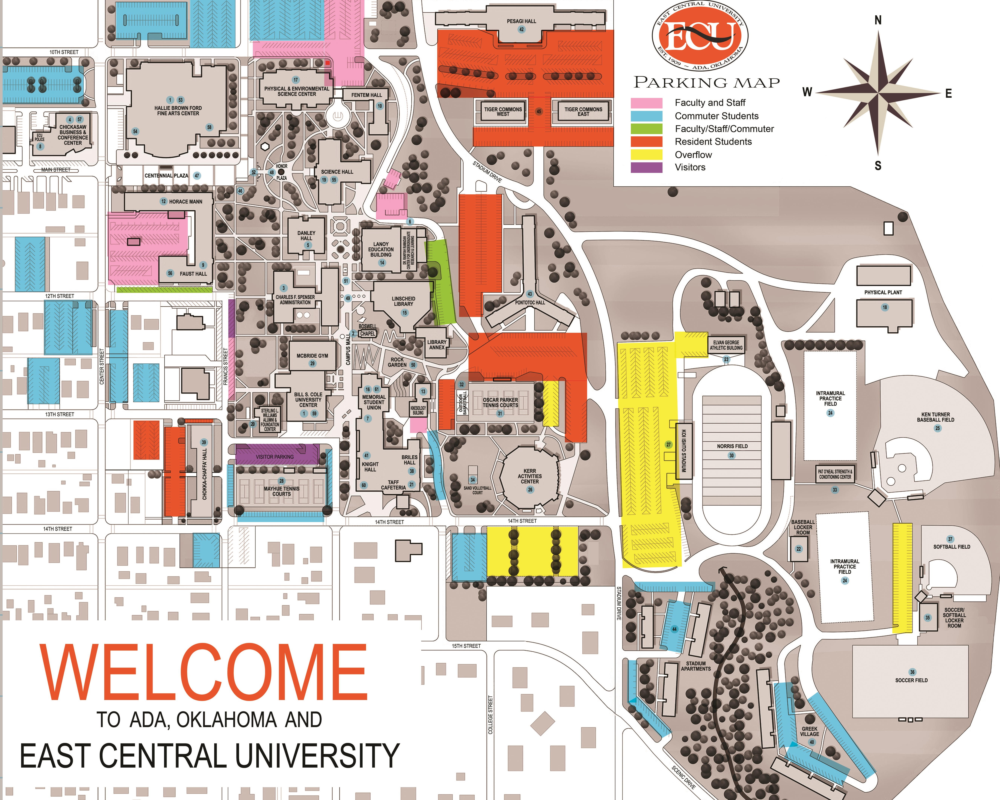

Campus Map

Parking Area
Nearby Bill S. Cole University Center,McBride Gym,Sterling L. Williams Alumni & Foundation Center,Mayhue Tennis Court,Memorial Student Union,Taff Cafeteria and ECU bookstore.
Nearby Bill S. Cole University Center,McBride Gym,Sterling L. Williams Alumni & Foundation Center and Mayhue Tennis Court.
Faculty Parking near Faust Hall and Horace Mann
Nearby CBCC building and ECU police
Nearby Hallie brown Ford Fine Arts Center,Horace Mann and Faust Hall.
Nearby Physical & Environmental Science Center,Fentem Hall,Science Hall, and Danley Hall
Nearby Lanoy Ed Building,Linscheid Library,Boswell Chapel and Dr. Raniyah Ramadan Center
Nearby Oscar Parker Tennis Courts.
Nearby Koi Ishito Stadium,Norris Field,Elvan George Athletic Building,Physical Plant,Ken Turner Baseball Field,Baseball Locker Room and PatO'Neal Strength & Conditioning Center
Nearby KACT and Taff Cafeteria.
Nearby Intramural Practice Field and Ken Turner Baseball Field
Nearby Baseball Locker Room
Nearby Intramural Practice Field,Ken Turner Baseball Field,PatO'Neal Strength & Conditioning Center,Soccer-Softball Locker Room,Tiger Soccer and Softball Field
Go Home